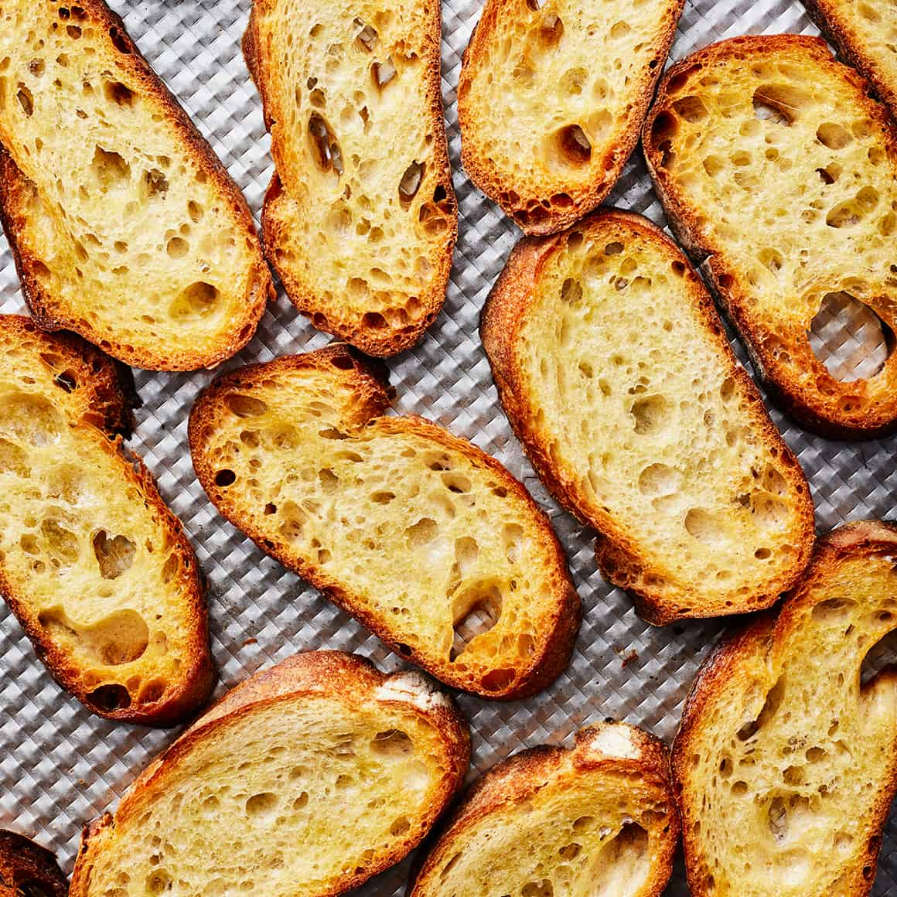

Perfect Rosemary Crostini
The perfect dip needs the perfect dipping item, and that's where this easy and delicious crostini recipe comes in handy.
Ingredients
- Baguette sliced diagonally about 1/4"-1/2" thickness
- 4 tbsp (half stick) butter, soft
- Olive Oil
- Garlic
- Two sprigs Rosemary, stems removed, chopped very fine
How it Do
- Preheat oven to 400 degrees fahrenheit
- In a bowl, mix the butter with an equal amount of olive oil until consistent
- Season with salt and pepper to taste
- Press 2 cloves (or however many you like) of garlic, add rosemary to taste, and mix to consistency
- Lay the baguette slices on a baking sheet and brush with the oil/butter mixture
- bake for 10 minutes or until crispy and brown at the edges
- Remove from oven and let cool
And that's it! Dip in my Goat Cheese Dip or top with mozzarella, tomato, basil, and balsamic glaze for tasty Caprese Bites!
If left overnight you can break into bits for superb croutons to use in a salad along with my Balsamic Vinaigrette
...